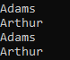

Операторы Cast и OfType для унаследования
Cast - пытается привести все элементы в коллекции к указанному типу.
OfType - в выходную последовательность будут помещены только те элементы, которые могут быть приведены к указанному типу.
public static void CastAndOfType()
{
ArrayList arrayList = new ArrayList();
arrayList.Add("Adams");
arrayList.Add("Arthur");
arrayList.Add("Buchanan");
IEnumerable<string> names1 = arrayList.Cast<string>().Where(n => n.Length < 7);
foreach(string name in names1)
{
Console.WriteLine(name);
}
IEnumerable<string> names2 = arrayList.OfType<string>().Where(n => n.Length < 7);
foreach(string name in names2)
{
Console.WriteLine(name);
}
}
В результате:

Created with the Personal Edition of HelpNDoc: Benefits of a Help Authoring Tool